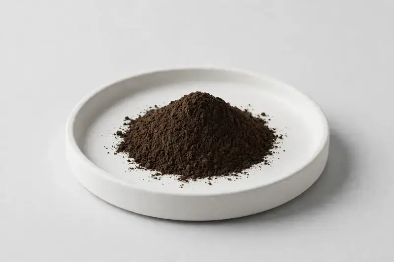

Auricularia auricula — traditional black fungus extract for immune, food, and beauty formulations.

Overview
Wood Ear Extract is a fruiting-body mushroom ingredient standardized to polysaccharides, a traditional black fungus material used in Asian wellness and food concepts. It fits capsules, functional foods, and cosmetics. As a Xi'an-based trading company sourcing through vetted partner producers, HerbChina Extracts helps overseas supplement, food, beverage, and cosmetics brands compare commonly requested market specifications. Buyers share their target spec and we confirm feasibility honestly before quotation.
Specifications below reflect commonly requested options in the market — not a stock list. Share your target spec and we'll confirm exactly what we can supply, honestly.
| Specification | Details |
|---|---|
| Botanical identity | Auricularia auricula, fruiting body |
| Marker compound | Polysaccharides — commonly requested: 20–50% (UV/HPLC) |
| Appearance | Dark brown to brownish-black fine powder |
| Analytical methods | Methods referenced in buyer specifications: HPLC, UV |
| Mesh size | Typically 80–100 mesh (confirm per inquiry) |
| Testing | COA/TDS arranged on request; scope agreed per your spec |
Applications
Documentation
We don't claim in-house labs or certifications we don't hold. COA and TDS documents can be arranged on request, and testing scope is agreed against your specification before supply.
FAQ
Related products
Trametes versicolor
Key marker: Polysaccharides
View specs →Grifola frondosa
Key marker: Beta-Glucan
View specs →Lentinula edodes
Key marker: Polysaccharides
View specs →Tremella fuciformis
Key marker: Polysaccharides
View specs →Sparassis crispa
Key marker: Beta-glucan
View specs →Buyer guides
Buyer’s guide
What beta-glucan really tells you, why grain-grown mycelium can mislead, and the questions to ask any mushroom supplier.
Read the guide →Buyer’s guide
Identity, actives, heavy metals, micro — what each section of a Certificate of Analysis means, and the red flags that tell you to walk away.
Read the guide →Send your target spec and volumes — we'll respond with a tailored quotation.
Request a Quote